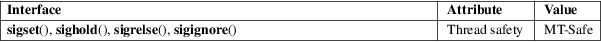

sigset, sighold, sigrelse, sigignore − System V signal API
Standard C library (libc, −lc)
#include <signal.h>
typedef void (*sighandler_t)(int);
[[deprecated]] sighandler_t sigset(int sig, sighandler_t disp);
[[deprecated]]
int sighold(int sig);
[[deprecated]] int sigrelse(int sig);
[[deprecated]] int sigignore(int sig);
Feature Test Macro Requirements for glibc (see feature_test_macros(7)):
sigset(),
sighold(), sigrelse(), sigignore():
_XOPEN_SOURCE >= 500
These functions are provided in glibc as a compatibility interface for programs that make use of the historical System V signal API. This API is obsolete: new applications should use the POSIX signal API (sigaction(2), sigprocmask(2), etc.)
The
sigset() function modifies the disposition of the
signal sig. The disp argument can be the
address of a signal handler function, or one of the
following constants:
SIG_DFL
Reset the disposition of sig to the default.
SIG_IGN
Ignore sig.
SIG_HOLD
Add sig to the process’s signal mask, but leave the disposition of sig unchanged.
If disp specifies the address of a signal handler, then sig is added to the process’s signal mask during execution of the handler.
If disp was specified as a value other than SIG_HOLD, then sig is removed from the process’s signal mask.
The dispositions for SIGKILL and SIGSTOP cannot be changed.
The sighold() function adds sig to the calling process’s signal mask.
The sigrelse() function removes sig from the calling process’s signal mask.
The sigignore() function sets the disposition of sig to SIG_IGN.
On success, sigset() returns SIG_HOLD if sig was blocked before the call, or the signal’s previous disposition if it was not blocked before the call. On error, sigset() returns −1, with errno set to indicate the error. (But see BUGS below.)
The sighold(), sigrelse(), and sigignore() functions return 0 on success; on error, these functions return −1 and set errno to indicate the error.
For sigset() see the ERRORS under sigaction(2) and sigprocmask(2).
For sighold() and sigrelse() see the ERRORS under sigprocmask(2).
For sigignore(), see the errors under sigaction(2).
For an explanation of the terms used in this section, see attributes(7).

POSIX.1-2008.
sighandler_t
GNU. POSIX.1 uses the same type but without a typedef.
glibc 2.1. SVr4, POSIX.1-2001. POSIX.1-2008 marks these functions as obsolete, recommending the use of sigaction(2), sigprocmask(2), pthread_sigmask(3), and sigsuspend(2) instead.
The sigset() function provides reliable signal handling semantics (as when calling sigaction(2) with sa_mask equal to 0).
On System V, the signal() function provides unreliable semantics (as when calling sigaction(2) with sa_mask equal to SA_RESETHAND | SA_NODEFER). On BSD, signal() provides reliable semantics. POSIX.1-2001 leaves these aspects of signal() unspecified. See signal(2) for further details.
In order to wait for a signal, BSD and System V both provided a function named sigpause(3), but this function has a different argument on the two systems. See sigpause(3) for details.
Before glibc 2.2, sigset() did not unblock sig if disp was specified as a value other than SIG_HOLD.
Before glibc 2.5, sigset() does not correctly return the previous disposition of the signal in two cases. First, if disp is specified as SIG_HOLD, then a successful sigset() always returns SIG_HOLD. Instead, it should return the previous disposition of the signal (unless the signal was blocked, in which case SIG_HOLD should be returned). Second, if the signal is currently blocked, then the return value of a successful sigset() should be SIG_HOLD. Instead, the previous disposition of the signal is returned. These problems have been fixed since glibc 2.5.
kill(2), pause(2), sigaction(2), signal(2), sigprocmask(2), raise(3), sigpause(3), sigvec(3), signal(7)